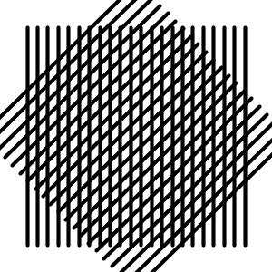

This page provides details of the Dear Data Sketch that you have been assigned, and summarises some of what was discussed in the final lecture on 'Creativity'.
It is not a complete record of all that was discussed in a somewhat unstructured lecture in which little new content featured. The lecture was a summary, a send-off and an attempt to inspire.
1. Dear Data Sketch
We have asked you to produce a Dear Data Sketch.
This should be ...
that depicts a data set that you have collected over time
that explores some aspect of the World
that is interesting to you
We hope that you will do this ...
that you are pleased with
And that the process (and perhaps the sketch) ...
Maybe just a little!
Those are the key requirements, it's as simple as that!
But additionally ...
We would like the sketch to be ...
We would like to see you using the coding constructs and capabilities that we have introduced, including ...
We also encourage you to ...
find your voice;
experiment;
celebrate your mistakes;
don't worry about anything;
take this wherever you want it to go;
have fun;
not go crazy
(by which we mean - put a reasonable amount of work into this, and make sure that other commitments, sleep, nutrition, relationships, exercise, keeping up with The Great British Bake-Off as it reaches its unimaginably tense and exciting denouement, are not compromised);
That's it - see what you can do.
2. Data Depiction and Generative Design
I want to think a little about creativity, generative art and data depiction in today's lecture.
For now - here is some code to try out:
// -- Generative Design Grid
// -- Generative Art : Line Interference
int lines = 40; // <-- number of static lines
int linesR = 40; // <-- number of rotated lines
float yTop, yBot ;
void setup () {
size(300, 300);
translate(width/2, height/2); // <-- translate origin to centre of canvas
yTop = -height*0.4; // <-- min y position of lines (after translation)
yBot = height*0.4; // <-- max y position of lines (after translation)
}
void draw () {
background(255);
translate(width/2, height/2);
strokeWeight(map(mouseY, height,0, 12,1));
// -- vertical lines:
for (int i=0; i<lines; i++) {
float x = map (i, 0, lines-1, -width*0.4, width*0.4);
line (x, yTop, x, yBot);
}
// -- rotated lines :
rotate(map(mouseX, 0, width, 0, TWO_PI));
for (int i=0; i<linesR; i++) {
float x = map (i, 0, linesR-1, -width*0.4, width*0.4);
line (x, yTop, x, yBot);
}
}
void mouseClicked () {
// -- change number of lines based upon mouse position:
lines = int(map(mouseX, 0,width, 3,100));
linesR = int(map(mouseY, 0,height, 3,100));
}
And a few pictures - output from the above and interacting with this sketch.
 |
 |
 |  |
 |
Canvases saved from the above sketch, with different visual characteristics. How do they vary?
I'd like you to think about the information carrying capacity of these graphics.
They all have similar structure, and are generated by the same algorithm.
but they vary in many ways, and might vary in others - such as
where they are positioned, their colour, their size, the line pattern (dashed, dotted, etc.)
Patterns and Data Depiction
If you captured this kind of pattern in a class, how many fields do you think you could add to the class that might then be used for data depiction?
3. And The Rest ...
The rest of the lecture was a bunch of tips and examples, ways to try to inspire you into being expressive and creative in your #CreativeCoding efforts.
I spoke a little about creativity and encourage you to think outside the box when #CreativeCoding.
I encouraged you to engage with the law on Copyright, which is discussed in Art : Core document and on a page of Copyright Discussion & Examples.
It's pretty simple and following some principles of good practice will keep you safe.
There were a few tips on engaging with your tutors, and encouragement to submit a Dear Data Sketch, as described above, so that you qualify to receive:
- a Creative Coding Commentary - from your personal tutor, for use in reference writing and recommendation letters
- a Digital Badge - from the Department of Computer Science, to display on LinkedIn and other social media where you promote your capabilities, competencies and experience
- an invitation to a Pizza & Data party - to celebrate our success and the start of Term 2 when we all arrive back in January (after the exams!)
Please give it a go - be brave, be creative, be engaged and remember that this activity is Pointless but not Worthless.
I reminded you all to check the Data Collection page for some tips, and not to use Dates or Times in your sketches - just use numbers, with days, minutes, hours or seconds, relative to some starting point.
There was then some stuff on Dogs and Robots, which was intended to encourage you to use class statements to define classes and create objects that contain and depict your data.
It's conceptually simple, graphically powerful and easy to do the basics.
Then it's just about building!
You have all that you need to do this in the #CreativeCoding notes with Objects : Core being a great place to head to for a reminder and Objects : Robots putting it into practice.
And then I disappeared for breakfast!
It's a long way from Leicester!
See you on the Discussion Forum.
Jason.
20 Nov 2024